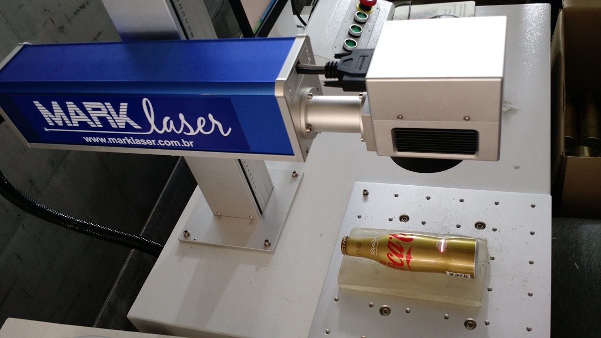
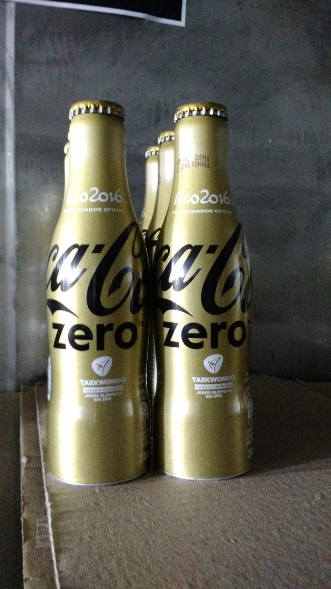
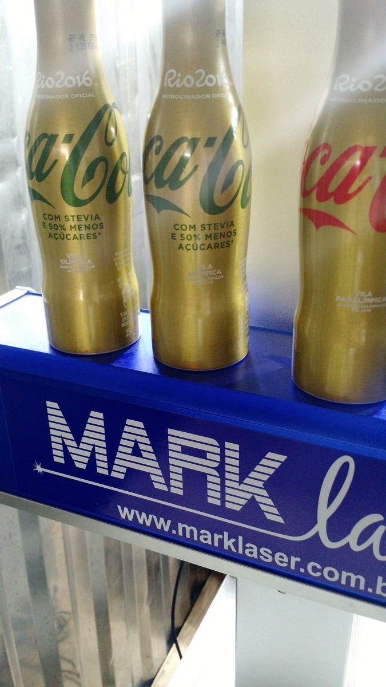
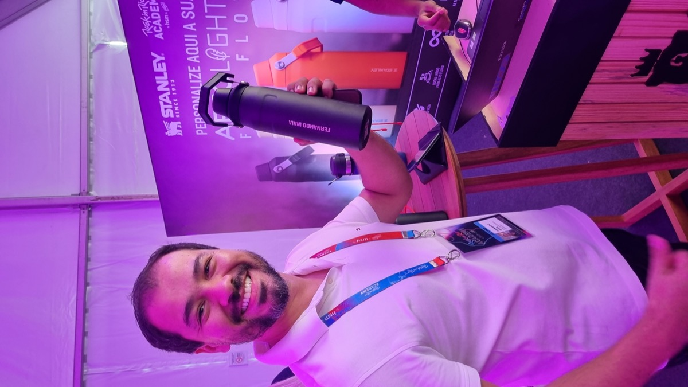
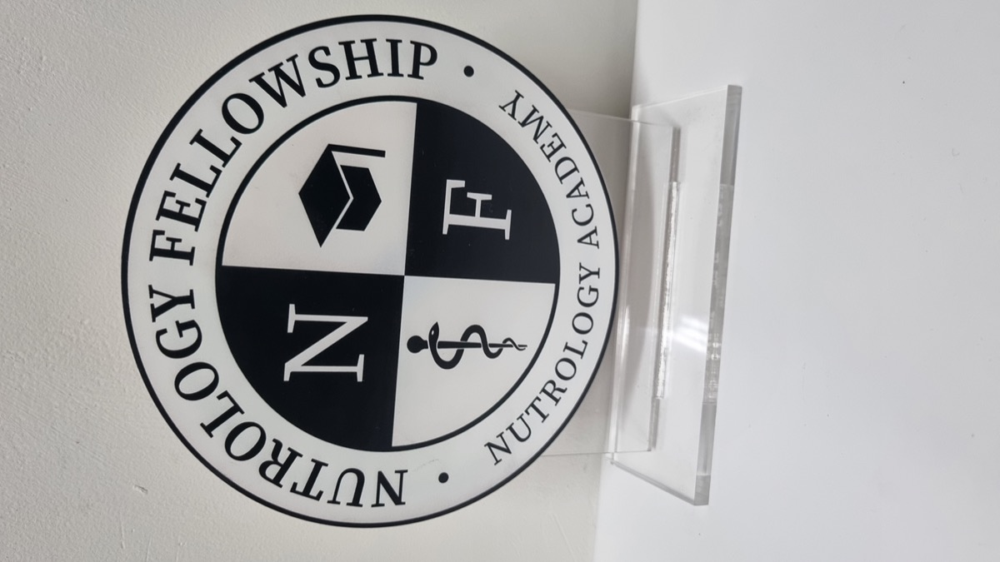
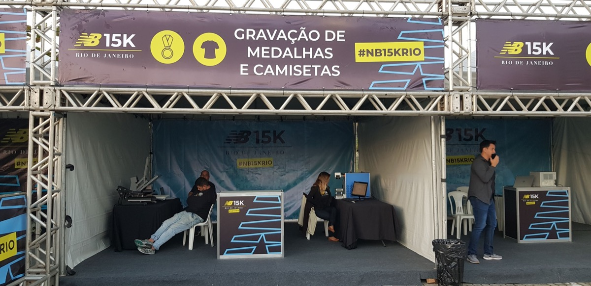
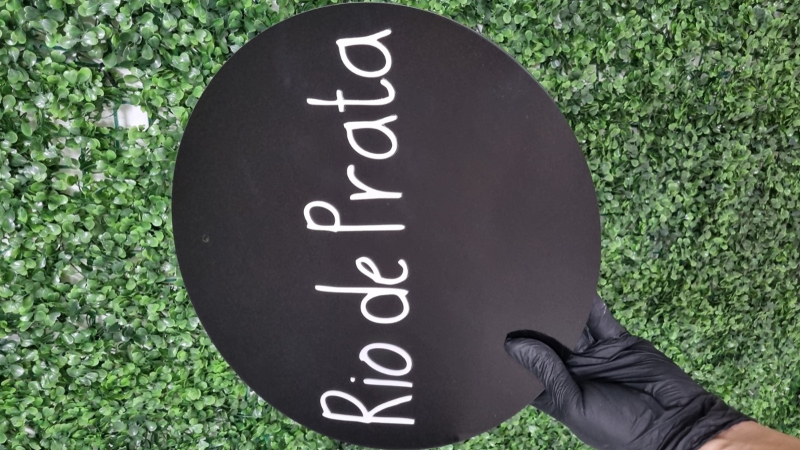
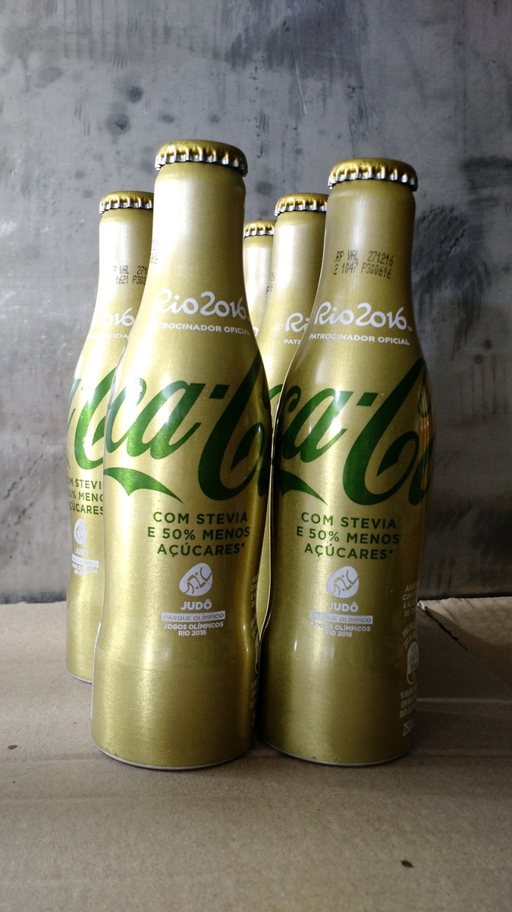

🎁
Brindes Corporativos B2B
Personalização em série de garrafas térmicas, copos (estilo Stanley), canetas, chaveiros, kits de boas-vindas e presentes executivos com o logo da sua empresa.
Gravação indelével em metais, brindes corporativos B2B, acrílico e peças técnicas industriais. Nitidez micrométrica, alta capacidade de produção em série e prazos rigorosos no Rio de Janeiro e para todo o Brasil.

Atendemos indústrias, agências de publicidade, marcas corporativas e produtores de eventos com o mais alto padrão técnico.
Personalização em série de garrafas térmicas, copos (estilo Stanley), canetas, chaveiros, kits de boas-vindas e presentes executivos com o logo da sua empresa.
Identificação patrimonial, plaquetas de motores, painéis elétricos, números de série, QR Codes e códigos DataMatrix de alta durabilidade e contraste.
Desenvolvimento exclusivo e gravação a laser de troféus em acrílico, placas comemorativas de homenagem, medalhas e peças institucionais sob medida.
Estrutura completa de máquinas a laser no seu evento com operadores técnicos especializados para personalização de brindes ao vivo para os convidados.
Marcação permanente em facas artesanais, lâminas, instrumentos cirúrgicos e ferramentas de precisão sem causar deformação estrutural ou corrosão.
Corte preciso em chapas de acrílico, MDF, tecidos e polímeros com acabamento polido, cantos vivos e tolerâncias dimensionais rigorosas.
Nossos equipamentos ajustam frequência, potência e pulso para cada tipo de substrato, garantindo contraste perfeito.
Veja algumas das peças, gravações e ativações executadas pela Mark Laser para marcas líderes e indústrias.






Atendimento desburocratizado para você receber sua cotação e suas peças no prazo exato.
Informe o material, quantidade e envie seu logotipo ou arquivo técnico (.AI, .DXF, .PDF ou imagem em alta resolução).
Alinhamos parâmetros de marcação, profundidade e tamanho. Enviamos prévia digital para você aprovar antes da rodagem.
Executamos a produção com rigoroso controle de qualidade. Retirada em Vila Isabel (RJ) ou envio seguro para todo o Brasil.

Sediada em Vila Isabel, a Mark Laser combina maquinário industrial de alta precisão (Fiber Laser e CO2) com anos de experiência no mercado corporativo, industrial e promocional.
Seja para um lote promocional corporativo de 5.000 peças ou para a identificação técnica seriada de componentes industriais, garantimos gravação indelével, padronização milimétrica e pontualidade na entrega.
Solicite uma cotação sem compromisso. Nossa equipe técnica responde rápido com as melhores opções para sua demanda.